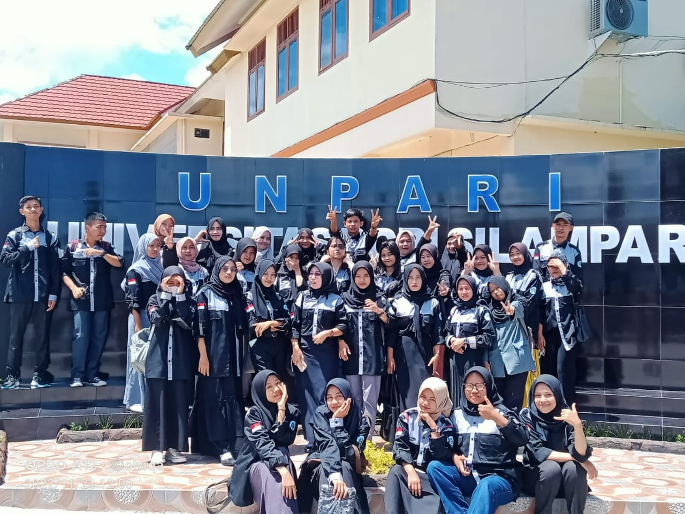

Cust Service Prodi Pendidikan Matematika
Universitas PGRI Silampari
Home
Tentang Prodi
Alur Pendaftaran
Biaya Studi
Beasiswa
Program Kampus

Kontak Utama Kampus
1. Email Kampus :
stkip@stkippgri-lubuklinggau.ac.id
2. Website Kampus :
www.unpari.ac.id
3. No Telepon :
(0733) 451432
4. Alamat :
Jalan Mayor Toha, Kelurahan Air Kuti, Lubuklinggau Timur I, Kode Pos 31626
5. Jam Operasional :
Pagi : 08.00 - 12.00
Sore : 15.00 - 19.00
6. Brosur Kampus :
Download disini
Pertanyaan dan Saran
Contact Us :
Google form